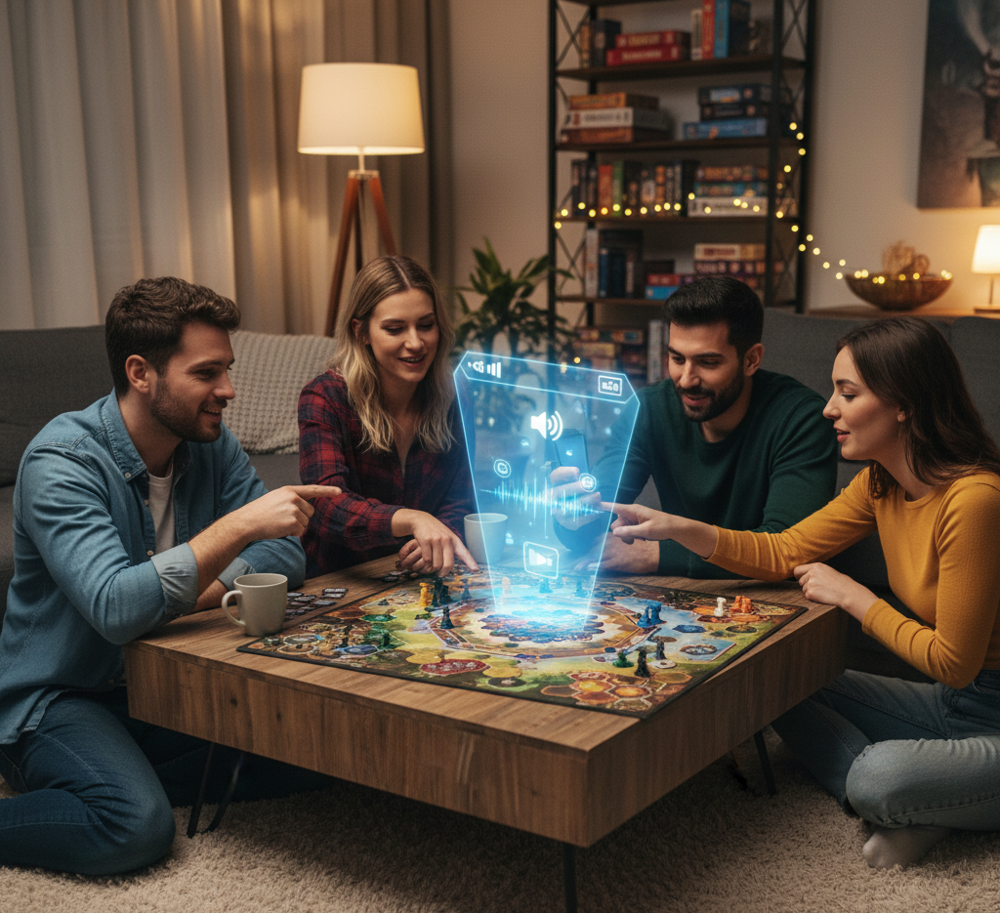

ボードゲームARガイド
ルールブックを開くその前に。
パッケージにスマホをかざすだけで、3Dモデルと音声解説がスタートします。
このシステムの特徴
パッケージを瞬時に認識
事前に登録されたボードゲームの箱（パッケージ）をカメラが正確に認識。ゲームごとの専用ガイダンスを自動で呼び出します。
音声でルール解説
「どんなゲーム？」「準備の方法は？」といった情報を音声で案内。分厚い説明書を読み込む前に、ゲームの全体像を掴めます。
スムーズな導入
アプリのインストールは不要。ブラウザで開いてかざすだけで、初めてのゲームでもすぐに遊び始める準備が整います。
こんなシーンで活用できます
ボードゲームカフェで
棚に並んだたくさんのゲーム。「これどんなゲームだろう？」と気になったらパッケージにかざすだけ。店員さんを呼ばなくても概要が分かります。
ショップでの購入前に
パッケージの裏面を読むだけでは分からない実際のプレイ感や、推奨人数・プレイ時間などのスペック情報を音声で補足します。

自宅でのインスト時に
友人と遊ぶ際、ルールの説明（インスト）をARにお任せ。準備の手順や勝利条件を音声で流すことで、スムーズにゲームを開始できます。